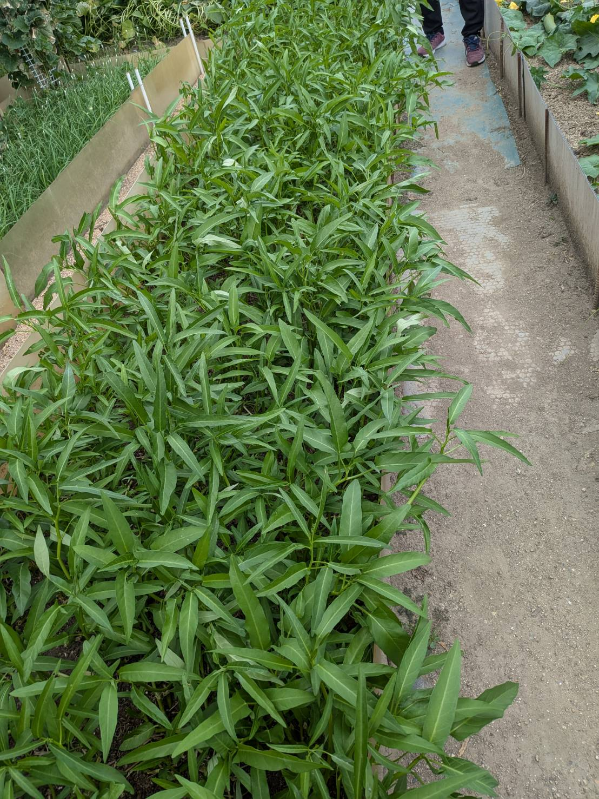

農業事業
「売れる野菜」を、自社一貫モデルで生産する
 写真：アジア野菜を栽培する農場の様子
写真：アジア野菜を栽培する農場の様子
廃棄リスクゼロ。
需要が確定した農業。
げんき大阪の農業事業の最大の強みは、自社飲食店（ネパール料理・異文化交流食堂）での使用が前提であること。「作っても売れない」リスクを根本から排除した、持続可能な農業モデルです。さらに在日外国人のアジア野菜需要を直接販路に活かします。
- 自社飲食店での使用が前提 — 廃棄リスク低減
- 在日外国人ネットワークで需要を把握
- 栽培→加工→販売→店舗使用の一貫体制
- 外国人材の就農による人手不足を自社で解決
自社一貫モデル
栽培から販売・消費まで、すべてを社内でつなぐ垂直統合型の農業ビジネスです。
栽培
ネパール料理に必要なアジア野菜・香草類を中心に栽培。農業経験を持つ外国人材が担当します。
加工
収穫した野菜を洗浄・カット・袋詰め。飲食店での調理に適したサイズへ加工します。
販売
地元の道の駅・スーパー・在日外国人向け食材店へ出荷。高付加価値のアジア野菜として展開します。
店舗使用
自社ネパール料理食堂で優先的に使用。新鮮・安心・安全な食材を自社で確保します。
高付加価値野菜の展開

写真：新鮮なアジア野菜（コリアンダー・フェヌグリーク・メティなど）アジア野菜
ネパール料理に使う本場の食材
コリアンダー・メティ（フェヌグリーク）・ラウ（白ゴーヤ）など、日本ではなかなか手に入らないアジア野菜を栽培。本格的なネパール料理の食材として需要が高い品目です。
販売先
3つの販売チャネル
①自社飲食店（優先使用）②地元の道の駅・スーパーへの卸売③在日外国人向け食材店・オンライン販売。安定した複数の販路で経営を支えます。
げんき大阪の農業が強い理由
需要確定
廃棄リスクが低い
自社飲食店での消費が前提のため、作物の行き先が常に確保されています。余剰分は外部販売へ。「売れない」リスクを構造的に最小化しています。
ネットワーク
外国人のニーズを直接把握
在日外国人コミュニティとのつながりにより、どの食材が求められているかを直接把握。「売れるアジア野菜」を生産できます。
人材連携
農業×人材の融合モデル
人材紹介業で培った外国人材活用のノウハウにより、農業の人手不足を自社内で解決。農業スキルを持つ外国人材の雇用創出にも貢献します。
地域と共に成長する
外国人材が農業を担うことで、地域の農業活性化と雇用創出に貢献します。また、在日外国人向けの食材供給を通じて、大阪における多文化共生のインフラとしての役割も果たしています。地域の道の駅・直売所との連携で、地産地消の循環も実現します。